どこにあるの？
白川郷は、岐阜県の北西部にある、山々に囲まれ た自然豊かな地域です。冬にはたくさんの雪が積 もる、日本でも有数の豪雪地帯です。特に有名な のが、昔ながらの「合掌造り」の家々が並ぶ風 景。白川郷の人々は、雪の多いきびしい自然に合 わせて、さまざまな工夫をしながら暮らしてきま した。
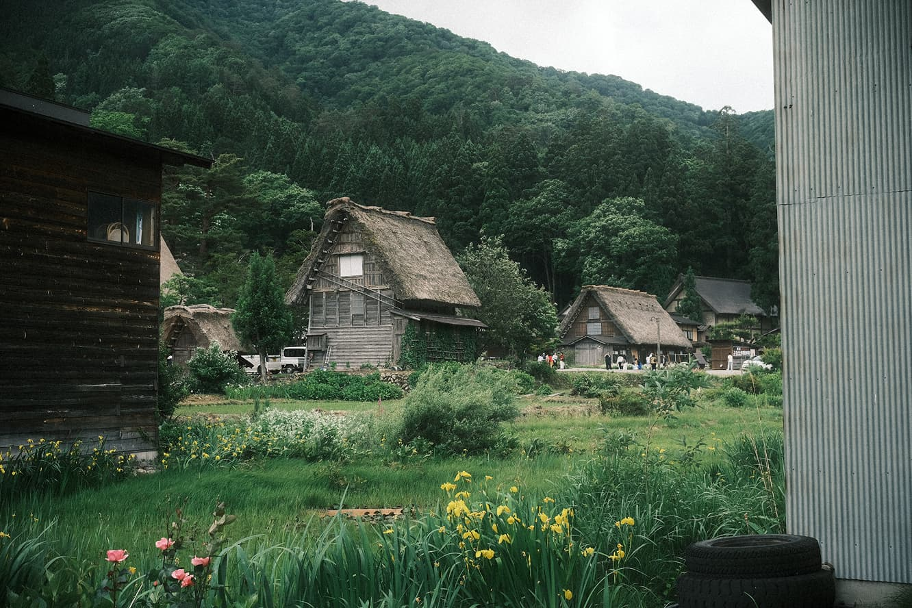
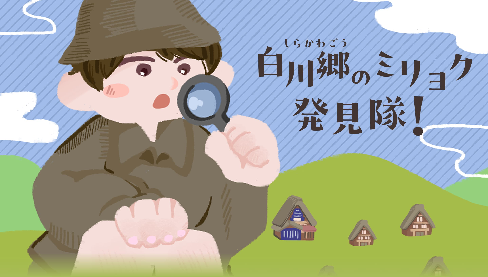
お店のヒミツを
さがしにいこう！
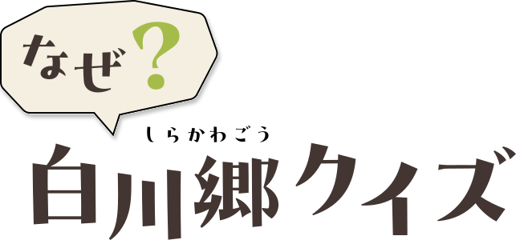
白川郷は、岐阜県の北西部にある、山々に囲まれ た自然豊かな地域です。冬にはたくさんの雪が積 もる、日本でも有数の豪雪地帯です。特に有名な のが、昔ながらの「合掌造り」の家々が並ぶ風 景。白川郷の人々は、雪の多いきびしい自然に合 わせて、さまざまな工夫をしながら暮らしてきま した。

こうした合掌造りの集落や、そこで受け継がれて きた暮らし、景観などが大切に守られています 。白川郷の合掌造り集落は、富山県の五箇山ととも に、1995年にユネスコの世界文化遺産に登録され ました。
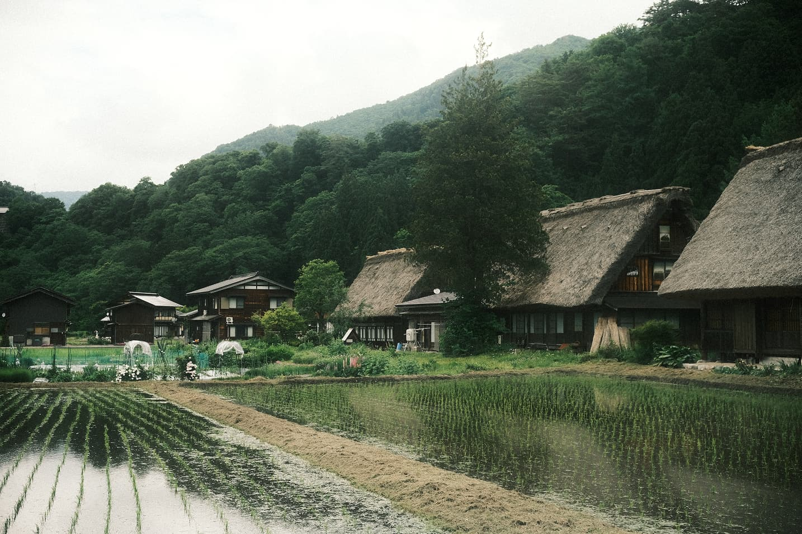
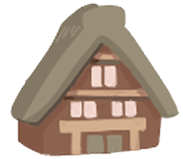
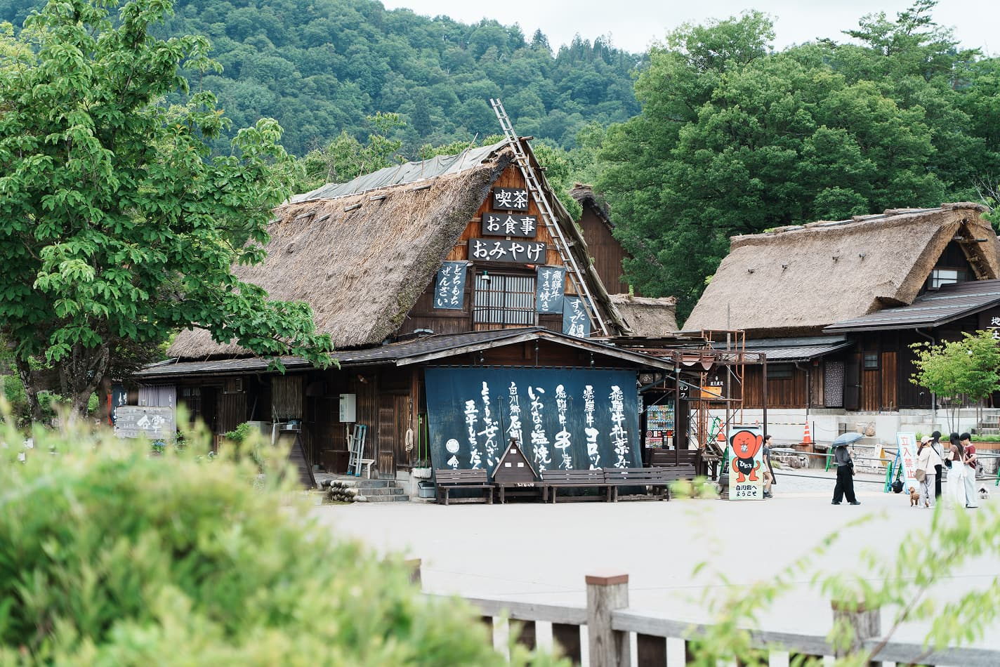
合掌造りでまず注目したいのは、大きくて急な角 度の屋根です。その形が、まるで両手のひらを合 わせて「合掌」しているように見えることから、 この名前がついたともいわれています。白川郷は 雪が多く、さらに雪が重い地域です。合掌造り は、そんな自然の中で暮らすのに適したつくりに なっています。
屋根には「茅（かや）」という植物が使われ、傷 んだ屋根は葺き替えながら大切に守られてきまし た。白川郷には、地域のみんなで協力し、助け合 う「結（ゆい）」の文化も受け継がれています。 合掌造りには、昔の人々の暮らしの知恵と、人と 人とのつながりがつまっています。
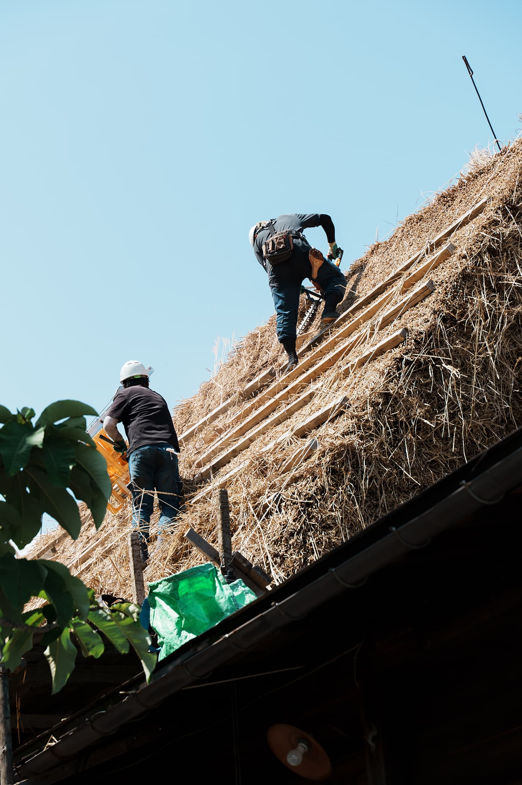
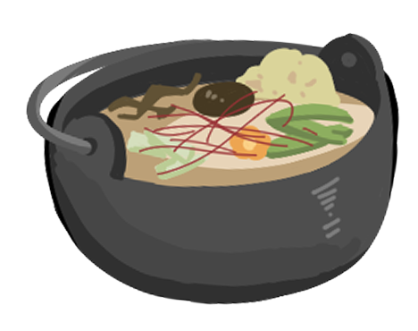
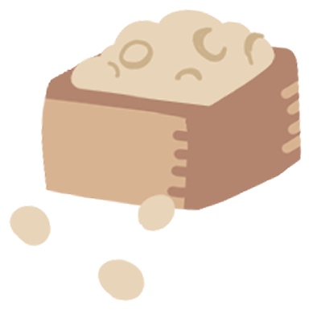
「すったて」は、大豆をすりつぶして作る、白川 郷に昔から伝わる食べ物です。このすったてを、 みそやしょうゆをもとにしただしに加えた「すっ たて汁」は、昔から地域の人々に親しまれてきま した。お祝い事など、特別な日の料理として食べら れることもありました。

その伝統的なすったて汁を、もっと親しみやすい 鍋料理にアレンジしたものが「すったて鍋」で す。飛騨地方の特産品である飛騨牛や、白川村の 特産品であるキクラゲなどを使ったものもありま す。昔から受け継がれてきた味が、新しい料理へ と変化しているところにも注目してみましょう。
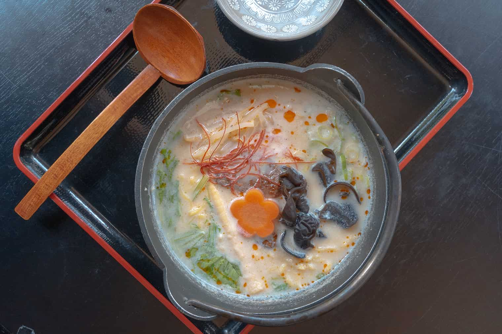

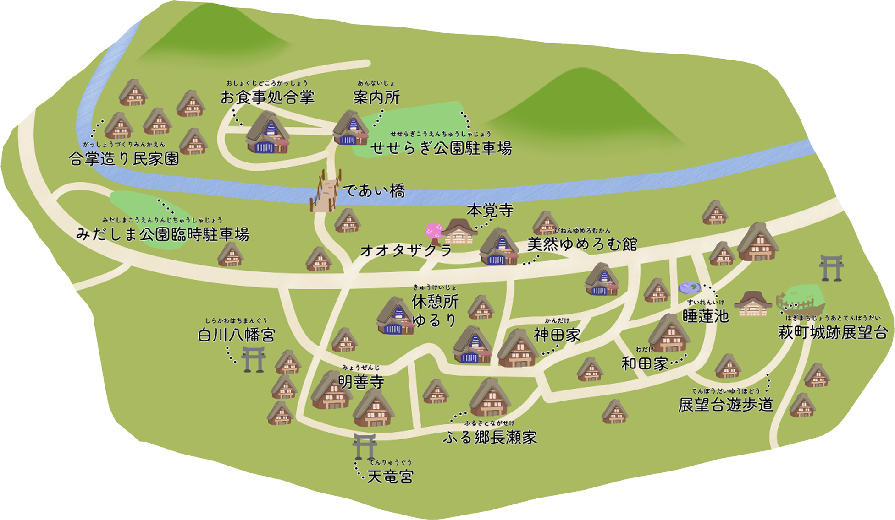
白川郷には、たくさんの見どころがあります。気になる場所を地図で探 しながら、白川郷をめぐってみましょう。歩いて、見て、食べてみる と、この土地ならではの暮らしや工夫が見えてくるかもしれません。